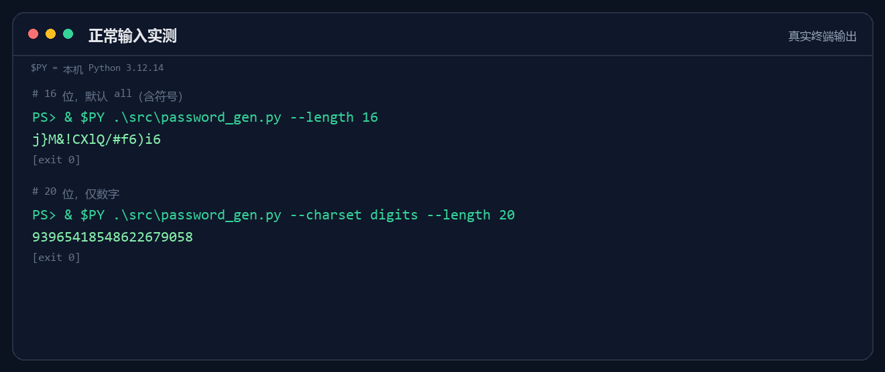

LIVE OUTPUT01 / 02

真实终端输出 · Windows PowerShell
PROJECT 01 / FEATURED
口令锻造所
PASSFORGE / CLI TOOL
一个用 Python 写的命令行随机口令生成器。使用 secrets 而不是 random，把长度、字符集和失败边界都写进规则里。
01 / SELECTED WORK
02 个项目
其中 01 个已展开

真实终端输出 · Windows PowerShell
PASSFORGE / CLI TOOL
一个用 Python 写的命令行随机口令生成器。使用 secrets 而不是 random，把长度、字符集和失败边界都写进规则里。
STUDENT MANAGER / C
用结构体、链表和文件读写撑起来的小系统。先学会让数据不丢，再谈界面好不好看。
档案页尚未展开 · 源码在本地仓库
02 / HOW I WORK
这一阶段真正留下的，不是几张漂亮的截图，而是三种做事顺序。
能打开、能点击、能返回，再谈动效和排版。页面首先是一个可用的东西。
第一版超长输入会卡住，就加上限、补测试、重跑 130 次稳定性检查。返工不是失败，是证据。
截图、状态码、耗时、404。写清楚自己怎么知道它真的能用，而不是只说“应该没问题”。